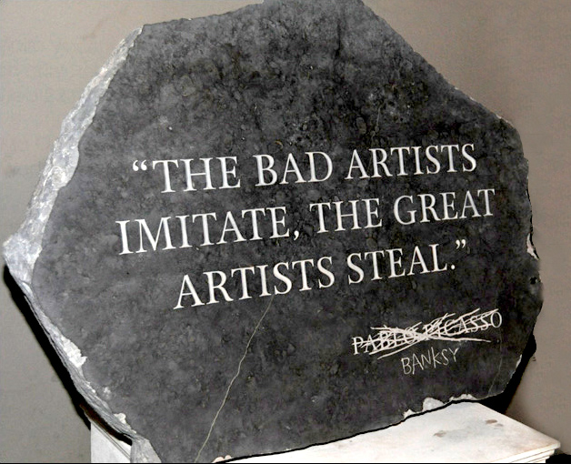

credit
I am trying to explain the ethos and social convention of FREE software. People have created software and they let you use it and modify it for free. Is only polite to extend them

academic courtesy and cite them for their contribution. Also it makes sense because you point ... read more